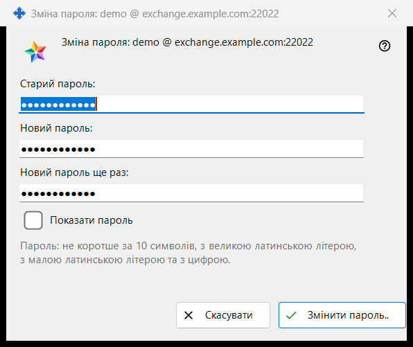
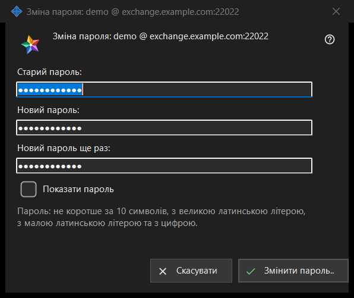

Зміна пароля
Призначення
Змінює пароль облікового запису обміну, до якого увійшов цей ПК. Відкривається кнопкою «Змінити пароль..» у групі «Обліковий запис обміну» налаштувань Share Manager; кнопка видна, лише коли обліковий запис на зв'язку. У заголовку вікна обліковий запис названо як логін @ сервер. Саме вікно нічого не надсилає: воно перевіряє введене й повертає його, надсилає підключення цього ПК, а останнє слово за сервером.


Порядок дій
- У налаштуваннях Share Manager знайдіть групу «Обліковий запис обміну» й натисніть «Змінити пароль..».
- Введіть «Старий пароль:».
- Введіть «Новий пароль:» і повторіть його в полі «Новий пароль ще раз:».
- Позначте «Показати пароль», щоб перевірити три поля.
- Натисніть «Змінити пароль..»; якщо з'явився рядок попередження, виправте поле й натисніть знову.
- Прочитайте відповідь, показану в групі.
Елементи вікна
Три поля
Старий пароль, новий пароль і його повтор. Усі три поля приховані; одна позначка «Показати пароль» розкриває їх разом і не запам'ятовується. Під час закриття вікна поля очищаються.
Правило пароля
Рядок під полями: «Пароль: не коротше за 10 символів, з великою латинською літерою, з малою латинською літерою та з цифрою.» Вікно перевіряє це одразу, тож відповідь приходить до надсилання.
Рядок попередження
Кнопка перевіряє по черзі: «Вкажіть старий пароль.», «Паролі у двох полях не збіглися.», потім правило: «Пароль коротший за 10 символів.», «У паролі немає великої латинської літери.», «У паролі немає малої латинської літери.», «У паролі немає цифри.». Перша знайдена проблема зупиняє перевірку, вікно лишається відкритим, нічого не надсилається.
Що відбувається після натискання
Якщо введення підходить, вікно закривається, а група показує відповідь. Успіх: «Пароль змінено. Цей комп'ютер продовжує працювати, а інші пристрої облікового запису повинні увійти заново.» Інші відповіді: «Старий пароль не підійшов.», повідомлення про забагато спроб із проханням зачекати хвилину, «Сервер відмовив у зміні пароля.» та «Немає зв'язку з сервером. Підключіться і повторіть.». Якщо сервер відхилив слабкий пароль, показано його власну фразу.
Скасування і клавіші
«Скасувати» або Esc закриває вікно, нічого не змінюючи; Enter натискає «Змінити пароль..».
Налаштування менеджера · Налаштування спільного доступу SFTP · Налаштування сервера обміну